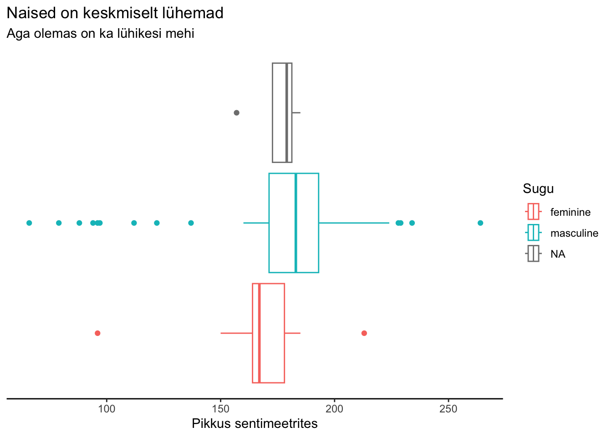
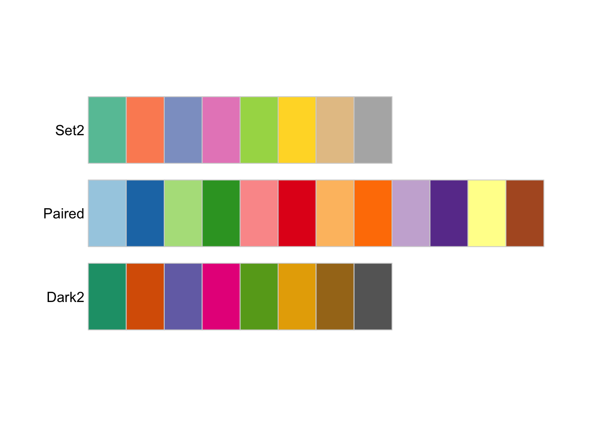

library(tidyverse)7 Joonised - lühiülevaade
See peatükk annab lühikese ülevaate, kuidas teha R-is jooniseid paketiga ggplot2(Wickham et al. 2023). ggplot2 on osa tidyverse maailmast ning seda paketti eraldi alla laadima ja käivitama ei pea.
Lugemissoovitus
Chang, W. (2024) R Graphics Cookbook, 2nd edition.
Wilke, C. O. (2019) Fundamentals of Data Visualization.
Soovitan Winston Changi raamat “R Graphics Cookbook” salvestada oma veebilehitseja järjehoidjasse. Raamat on täis praktilisi näpunäited, kuidas oma joonist paremaks timmida. Wilke raamat “Fundamentals of Data Visualization” selgitab juurde ka teooriat, kuidas andmetega lugu ilusamini ja selgemalt jutustada. Soovitan lisaks laadida alla paketi ggplot2 cheat-sheet ja hoida seda käepärast. Õige joonise tegemine algab kasutusel olevatest tunnustest ning cheat-sheet aitab graafika-grammatikas kiiresti õiges suunas liikuda.
Minu jaoks jagunevad joonised oma olemuselt kaheks. Ühed on need, mida ise vaatad ja teised on need, mida esitled teistele andmete ilmestamiseks. Esimestega ei pea disaini mõttes üldse vaeva nägema, teisi võib tundideks või isegi päevadeks kaunistama jäädagi.
Baasversiooniga saab joonised kiiremini kätte (st kulub vähem aega koodi kirjutamisele). Samas andmed alluvad töötlemisele paremini paketti ggplot2 kasutades ja seepärast on kasulik õppida kohe jooniste tegemist käsuga ggplot().
Kasutan taas starwars andmestikku, mis tuleb paketiga tidyverse kaasa.
data(starwars)7.1 Baaskäskude abil jooniste tegemine
Toimivad käsud:
plot()- Joondiagrammi saamiseks lisa
plot()sisse täpsustustype="l" - Karpdiagrammi jaoks on käsk
boxplot() - Tulpdiagrammi saab teha käsuga
barplot() - Histogrammi tegemiseks on käsk
hist()
Neid baaskäske saab omakorda täiendada. Loe täpsemalt nende käskude kohta dokumentatsioonist.
#näiteks loe barplot kohta
?barplot()7.2 ggplot() töö loogika
Esmalt kirjeldan töö loogikat ja seejärel kordan tööloogika kirjeldust luues näidispilti samm-sammult.
Käsk ggplot() joonistab graafika kihtidena ning esimesed kaks kihti peavad olema kindlas järjekorras. Iga uue kihi lisamine käib + märgiga.
- Tööala kaardistus ehk esimene samm peab olema andmestiku ja tunnuste määratlemine. See on etapp, mille käigus valid graafikule teljed.
- Seejärel tuleb täpsustada geomeetria ehk öelda, mis tüüpi joonist (nt histogramm või joondiagramm) luua soovid. Geomeetria kui kujund, mida pildile panna. Geomeetrilise kihi lisamine algab sõnaga
geom_ning järgneb joonise tüübi nimi. Näiteksgeom_barblot(). - Oluline mõiste jooniste loomisel on esteetika (värv, suurus jms) mida suunab käsk
aes(). Selle käsuga täpsustad, mil viisil soovid kasutatava tunnust joonisel esitleda.aes()käsk tuleb kasutusele juba esimesel real, kuid vajadusel saab lisada täpsustusi sama käsuga ka järgmistel jooniste kihtidel. - Seejärel tasub joonisele lisada juba viidad, et teised ka aru saaks, mida joonisel kujutatud on. Viitade all pean ma silmas pealkirju, legende, paremaid telgede nimesid jms.
- Siit edasi on kõik juba tuled ja viled. Muuta saab teksti fonti, värvi, suurust, legendi asukohta, kategooriate nimesid, tausta värve jne. Neid ei ole mõtet siin kõike ära kirjeldada, sest R Graphics Cookbook (Chang 2024) annab iga etapi kohta konkreetseid näited.
Jäta meelde, et käsuga ggplot() alustad joonise loomist ning iga järgmise kihi lisamine käib + märgiga. Miinimum joonis ggplot-iga on vähemalt kahe kihiline, sest ilma geom_ täpsustuseta andmeid välja ei kuvada ei saa. Tunnuste määratlemine käib alati aes() käsu sees.
Käsk ggplot() tahab alati esimese täpsustusena teada, mis andmestikuga on tegemist. Seda võib kirjutada täpsustusena data= aga võib ka kirjutada lihtsalt andmestiku nime.
ggplot() töö-loogika samm-sammult
Kordan sama, mis alapeatüki esimestes punktides räägitud, aga nüüd koos piltidega.
Esmalt toimub käsuga ggplot() tööala kaardistus. Öelda tuleb andmestiku nimi ja tunnus käsu aes() sees.
1ggplot(starwars, aes(height))- 1
- Loon joonise põhi kasutades starwars andmestikku ja x teljele pane tunnuse “height”.
Tekib justkui tühi pilt, kuna R-ile pole veel öeldud, millise kujundiga andmeid esitleda. Praegu on joonisel x-telg, mille skaala on loodud starwars andmestiku tunnuse height järgi.
Vaikimisi paneb ggplot() käsu sees aes() käsk esimesena kirjutatud tunnuse nime x-teljele. x ja y telge saab täpsustada x= või y= ja siis ei ole oluline, mis järjekorras need anda.
Lisame geomeetrika ja kasutame näiteks karpdiagrammi ehk boxplot geomeetrikat.
- 1
- Võta andmestik starwars ja kasuta joonisel x teljel tunnust height
- 2
- Lisa karpdiagrammi kujund
R teeb joonise valmis ja annab ka teada, et eemaldas joonist tehes kuus rida.
Pane tähele, et puuduvad väärtused ei kao jooniseid tehes vaikselt ära. Vaata siit, kuidas puuduvate väärtustega toime tulla.
Harjuta lugema end teateid, mida R kuvab.
Kordame sama tunnusega joonise tegemist, aga vahetame ära geom_-i.
ggplot(starwars, aes(height))+
geom_histogram()`stat_bin()` using `bins = 30`. Pick better value with `binwidth`.Warning: Removed 6 rows containing non-finite values (`stat_bin()`).
Joonisel ei pea olema ainult üks tunnus, mis on seotud käsuga aes().
Näiteks saab lisada aes() käsu geomeetrika sisse.
ggplot(starwars, aes(height))+
1 geom_boxplot(aes(colour = gender))- 1
- Joonista kujundid nii, et tunnuse “gender” kategooriad on kõik erineva värviga.
Pane tähele, et lisaks “height” puuduvatele väärtustele (neid on 6) on ka tunnusel “gender” puuduvaid väärtusi. Karpdiagramm oma olemuselt ei anna teada grupi suurusest aimu (ehk kui palju on neid, kelle gender väli on tühi). Puuduvad väärtused hakkavadki joonistel teinekord paremini silma. Seepärast sobib selline üpris inetu välimusega joonis ideaalselt “enesele vaatamiseks” tunnustega tutvumise faasis.
Isegi kui seda joonist teistele esitlema ei lähe, tasuks teha mõni märge (st viide) pildil nähtu kohta. Kasvõi iseendale, et oleks meeles mida nägid. Käsu labs() sees saab lisada pealkirju ja kirjutada üle olemasolevaid välju.
ggplot(starwars, aes(height))+
geom_boxplot(aes(colour = gender))+
1 labs(title ="Naised on keskmiselt lühemad",
2 subtitle = "Aga olemas on ka lühikesi mehi",
3 x="Pikkus sentimeetrites",
4 color="Sugu")- 1
- Lisa joonisele pealkiri
- 2
- Lisa joonisele alapealkiri
- 3
- Kirjuta x-telje viide üle tekstiga “pikkus sentimeetrites”
- 4
- Kirjuta legendi pealkiri üle tekstiga “Sugu”
Selline võiks välja näha üks tööjoonis paketiga ggplot2. Baasversiooniga saab teha karpdiagrammi käsuga boxplot(). Väljund on mõnes mõttes küll kiire ja puhas, aga puuduvad väärtusi baasversiooni joonis sulle otse näkku ei kuva.
boxplot(starwars$height ~ starwars$gender)7.2.1 Jooniste R-ist välja salvestamine
Käsk ggsave() võtab aluseks viimase ggplot() käsuga tehtud joonise ning salvestab selle vaikimisi sinu töökausta. Vajadusel saab ette öelda laiuse (width=), pikkuse (height=) ning nende mõõtühiku (units=) ning resolutsiooni (dpi=). Faililaiend võib olla .pdf, .png, .jpeg, .svg, .tiff jms.
ggsave("minu_boxplot.png",
width = 5,
height = 4,
units = "cm",
dpi=200)Warning: Removed 6 rows containing non-finite values (`stat_boxplot()`).7.3 Andmete puhastamine joonise jaoks
Kui puuduvate väärtuste esitlemine joonisel pole parasjagu oluline, saab need enne ggplot() käsu kasutamist eemaldada.
Ära unusta pärast torude %>% kasutamist ggplot() käsu järel kihtide lisamisel + märki kasutamast!
starwars%>%
drop_na(height, gender)%>%
1 ggplot(aes(height))+
geom_boxplot(aes(colour = gender))- 1
-
ggplot()käsk ei vaja nüüd andmestiku nime, sest see saadeti läbi torude%>%sulgude sisse esimesele kohale.
7.4 “Hea joonise” disainimine
Ütlen kohe, et universaalselt head joonist, mis kõigile meeldiks ning oleks ühteviisi arusaadav, ei ole olemas. Üldiselt on hea joonis on see joonis, millest vaataja saab aru. Inimesed saavad paremini aru sellestt, millega nad on juba harjunud. Kasuta võimalusel valmis värvipalette.
Loe selge sõnumi edastamise kohta rohkem raamatust Fundamentals of Data Visualization (Wilke 2019).
Stiili lisamine
Kasuta läbivalt ühes dokumendis jooniste puhul sama stiili. ggplot2 paketiga tuleb kaasa mitmeid stiile. Neid saab lisada joonisele eraldi kihina kasutades käsuga theme_*(). Näiteks kasutame theme_classic(), mis näeb veidi rahulikum välja kui ggplot2 baasjoonise stiil.
ggplot(starwars, aes(height))+
geom_boxplot(aes(colour = gender))+
labs(title ="Naised on keskmiselt lühemad",
subtitle = "Aga olemas on ka lühikesi mehi",
x="Pikkus sentimeetrites",
color="Sugu")+
theme_classic()Lisa kogu (markdown) dokumendile üks jooniste teema. Kasuta selleks käsku theme_set()
Näiteks lisa dokumendi algusesse järgmine koodilõik.
#theme_set(theme_classic())Erinevad stiilid on: theme_gray(), theme_bw(), theme_linedraw(), theme_light(), theme_dark(), theme_minimal(), theme_classic(), theme_void(), theme_test() .
Kõiki stiile saab vajadusel ka kohendada ning vajadusel saab luua täiesti oma teema-stiili.
Joonise tüüp vastavalt sõnumile
Vaata siit, kuidas esitada korrelatsiooni paketi corrplot või baaskäskude abil. Loe ka, kuidas saab tunnuse keskmiste võrdlust esitleda piltide abi.
Peatükk on täiendamisel.
Viitade kohendamine
Näiteks ei ole loogiline esitleda y-telje skaala numbreid, sest y-telg on meil nn kunstlik.
ggplot(starwars, aes(height))+
geom_boxplot(aes(colour = gender))+
labs(title ="Naised on keskmiselt lühemad",
subtitle = "Aga olemas on ka lühikesi mehi",
x="Pikkus sentimeetrites",
color="Sugu")+
1 scale_y_continuous(breaks = NULL) +
theme_classic()- 1
- Ära kasuta y-teljel vahemike märke

Lisaks on imelik, et pool joonise viitasid on eesti keeles ja pool inglise keeles ning täitsa võõras inimene ei tea, kes või mis on NA. Tunnuseid ei pea ringi kodeerima, kategooriate silte saab vajadusel muuta ka otse joonisel.
ggplot(starwars, aes(height))+
geom_boxplot(aes(colour = gender))+
labs(title ="Naised on keskmiselt lühemad",
subtitle = "aga olemas on ka lühikesi mehi",
x="Pikkus sentimeetrites",
color="Sugu")+
scale_y_continuous(breaks = NULL)+
theme(legend.position = "bottom")+
scale_color_discrete(labels=c("naiselik", "mehine", "teadmata"))+
theme_light()Warning: Removed 6 rows containing non-finite values (`stat_boxplot()`).Värvid joonistel - värvipaletid
Kõik inimesed ei näe värve ühte moodi, mistõttu alustan kohe sellest, kuidas muuta joonised värvipimedasõbralikuks. See peaks olema esimene vajadus, miks üldse hakata värve muutma. “Ilusad värvid” tulgu pärast seda.
ggplot2 paketiga tuleb kaasa viridis(Garnier et al. 2024) pakett. Värvide kasutamisel tuleb valida õige käsk sõltuvalt sellest, mis tüüpi on joonisel kasutatav tunnus. Käsk scale_fill_d() on kasutamiseks diskreetsete (st kategoorialsete) tunnuste puhul ning scale_fill_viridis_c() on järjestikuste tunnuste jaoks.
viridis paketi värvid jätavad joonise loetavaks ka must-valgelt välja prindituna.
starwars%>%
drop_na(gender, sex)%>%
ggplot( aes(gender))+
geom_bar(position="fill",aes(fill=sex))+
scale_fill_viridis_d()Pakett RColorBrewer(Neuwirth 2022) annab valiku värvipallette, mis on sobilikud ka värvipimedatele.
Loogiline on kasutada värvipalleti sõltuvalt tunnuse või joonise tüübist. Värvipalletid on jagatud, kus värvitoonid on kas järjestikused (sequential), lahknevad (divergent) või “kvalitatiivsed” (qualitative).
library(RColorBrewer)Vaata värvipallettide valikut käsuga display.brewer.all() ning täpsusta käsu sees, mis tüüpi palleti soovid. Lisa juurde colorblindFriendly=T.
display.brewer.all(type="seq",colorblindFriendly = T)
display.brewer.all(type="div",colorblindFriendly = T)display.brewer.all(type="qual",colorblindFriendly = T)
Konkreetse värvipaleti nägemiseks kasutame käksu display.brewer.pal(), kus esmalt tuleb öelda, mitut värvi on soov paletist näha ning seejärel kirjutada paleti nimi.
display.brewer.pal(n=12, name="Blues")Warning in display.brewer.pal(n = 12, name = "Blues"): n too large, allowed maximum for palette Blues is 9
Displaying the palette you asked for with that many colorsKas märkasid hoiatusteadet? Antud paleti maksimumvõimekus on tegelikult üheksa erineva värviga ning seepärast kuvab ta mulle minu poolt küsitud 12 värvi asemel üheksa.
Igal värvil on ka oma konkreetne nimi, mis on RGB-koodi või kuueteistkümnendsüsteemi HEXs.
Värvinimede kuvamiseks tuleb kasutada brewer.pal() käsu sees täpsustust names ja värvipaletti nime.
brewer.pal(n=9, name="Blues")[1] "#F7FBFF" "#DEEBF7" "#C6DBEF" "#9ECAE1" "#6BAED6" "#4292C6" "#2171B5"
[8] "#08519C" "#08306B"Kasutame nüüd mõnda meelepärast värvipaletti joonisel.
ggplot(starwars, aes(height, mass))+
geom_point(aes(color=sex))+
scale_color_brewer(palette="Set2")+
theme_bw()Warning: Removed 31 rows containing missing values (`geom_point()`).Värvid joonistel - käsitsi lisamine
Mõnikord on ikkagi vaja käsitsi lisada konkreetne värv. Näiteks on asutusel kasutuses kindlad värvid ja pead joonise tegema etteantud värvidega. Selleks on sobiv käsk scale_color_manual() või scale_fill_manual() sõltuvalt sellest, kas kasutad joonisel fill= või color=.
ggplot(starwars, aes(height))+
geom_boxplot(aes(fill=gender))+
scale_fill_manual(values=c("#DEEBF7","#6BAED6", "#08519C"))Warning: Removed 6 rows containing non-finite values (`stat_boxplot()`).Pane tähele, et NA väärtusi ei saa nii konkreetse värviga siduda. Selleks pead eraldi täpsustama na.value= , kuid siis on ta jätab legendis kollase värvi välja. Pane tähele, et R saab hakkama ka värvi nimedega.
ggplot(starwars, aes(height))+
geom_boxplot(aes(fill=gender))+
scale_fill_manual(na.value="yellow", values=c(masculine="#DEEBF7",feminine="#6BAED6"))Warning: Removed 6 rows containing non-finite values (`stat_boxplot()`).